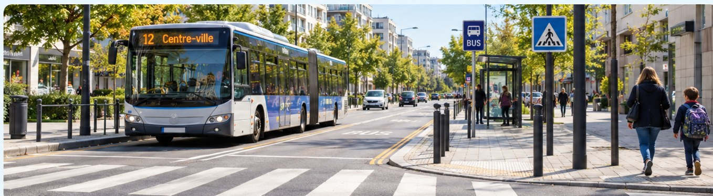

🦉 Maître Hibou · Géographie CE2 · Période 2 · GEOG-P2-06
🚌 Relier les déplacements et les aménagements aux besoins des habitants
Les habitants se déplacent chaque jour pour leurs activités.

1. Pourquoi se déplacer ?
On se déplace pour aller à l’école, travailler, faire des achats, se soigner ou pratiquer un loisir.
2. Comment se déplacer ?
Selon les lieux et les distances, on peut marcher, aller à vélo, prendre un bus, un tramway ou une voiture.
3. Pourquoi aménager la ville ?
Les trottoirs, pistes cyclables, passages piétons, arrêts de bus et routes facilitent les déplacements. Certains aménagements améliorent aussi la sécurité.
Je retiens
Les transports et les aménagements répondent aux besoins de déplacement des habitants.